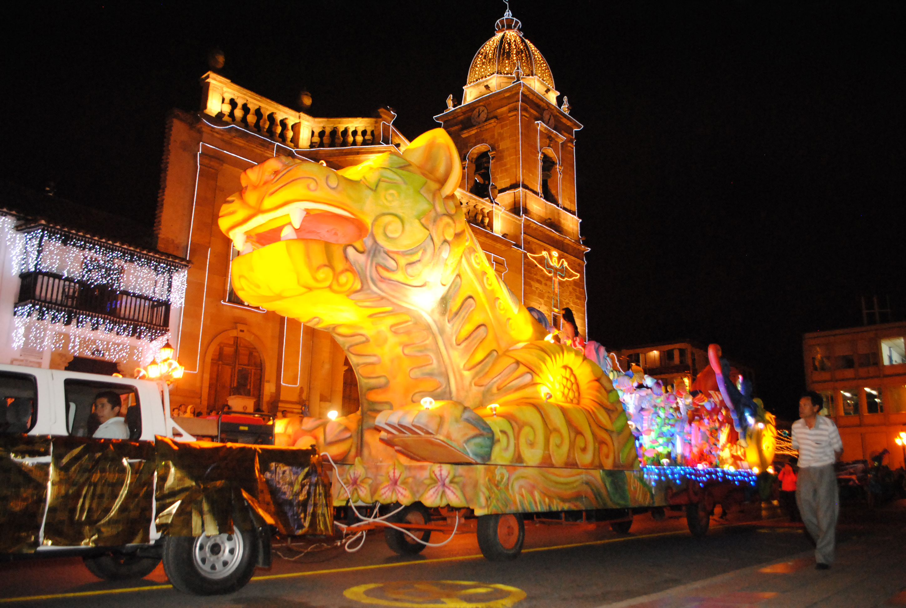
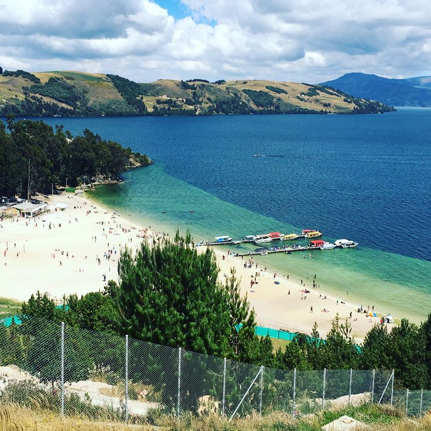
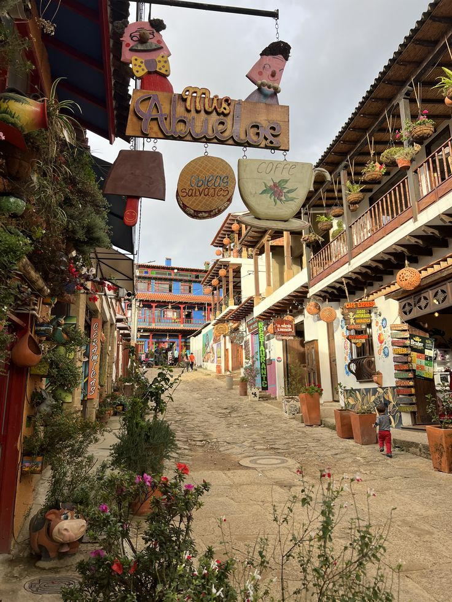
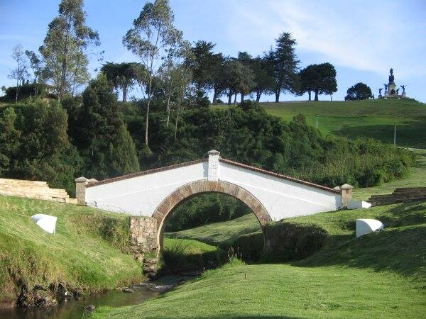

Descubre Boyacá
Boyacá es un destino turístico lleno de historia, cultura y naturaleza. Reconocido por su papel en la independencia de Colombia, cuenta con pueblos coloniales como Villa de Leyva, Monguí y Ráquira, así como paisajes únicos en el Páramo de Ocetá y la Laguna de Tota.
Uno de los eventos más representativos del departamento es el Aguinaldo Boyacense, celebrado cada diciembre en Tunja. Durante una semana, la ciudad se llena de luces, desfiles, conciertos, muestras artesanales y actividades culturales que reflejan la alegría y las tradiciones del pueblo boyacense. Es una festividad que combina fe, arte y espíritu navideño, convirtiéndose en una experiencia mágica para locales y visitantes.
En A&G TOURS ofrecemos transporte turístico y empresarial para recorrer Boyacá con comodidad y seguridad. Realizamos traslados a festivales tradicionales, rutas artesanales y planes ecológicos, ideales para grupos familiares, estudiantes y empresas.
Nuestro objetivo es que disfrutes lo mejor de Boyacá con puntualidad y profesionalismo, garantizando experiencias de turismo cultural y natural en el corazón del altiplano colombiano.
Aguinaldo Boyacense
El Aguinaldo Boyacense es la celebración navideña más emblemática del departamento y una de las más antiguas de Colombia. Cada diciembre, Tunja se llena de luces, desfiles, música y actividades culturales que reflejan la alegría y las tradiciones del pueblo boyacense. Es una experiencia mágica que combina fe, arte y festividad en el corazón del altiplano.

Villa de Leyva
Villa de Leyva es uno de los pueblos coloniales más emblemáticos de Colombia. Sus calles empedradas, casas blancas y la imponente Plaza Mayor la convierten en un destino turístico que transporta a los visitantes al pasado histórico del país.
Laguna de Tota
La Laguna de Tota es el lago más grande de Colombia, rodeado de montañas y playas de arena blanca como Playa Blanca. Es un destino ideal para practicar deportes acuáticos, disfrutar del paisaje y conectarse con la naturaleza boyacense.
Monguí
Monguí es un pueblo patrimonio con calles empedradas y un imponente puente de piedra. Es famoso por la fabricación artesanal de balones y por su cercanía al Páramo de Ocetá, considerado uno de los más bellos del mundo.
Ráquira
Conocido como la capital artesanal de Colombia, Ráquira es famoso por sus coloridas fachadas, talleres de cerámica y artesanías en barro. Es un destino lleno de tradición cultural y una parada obligada en Boyacá.
Páramo de Ocetá
Considerado por muchos como el páramo más hermoso del mundo, el Páramo de Ocetá ofrece paisajes de frailejones, lagunas y senderos rodeados de niebla. Es un destino perfecto para el ecoturismo y senderismo en Boyacá.
Puente de Boyacá
El Puente de Boyacá es uno de los lugares históricos más importantes de Colombia. Aquí se libró la batalla que selló la independencia del país el 7 de agosto de 1819. El complejo cuenta con monumentos, museos y un paisaje rodeado de montañas que invita a reflexionar sobre la historia y el valor de la libertad.

Pozos Azules
Los Pozos Azules son formaciones naturales ubicadas a las afueras de Villa de Leyva. Sus aguas turquesa y el paisaje semidesértico que los rodea ofrecen un contraste único, siendo uno de los lugares más fotografiados y visitados de Boyacá.
¡Contáctanos!